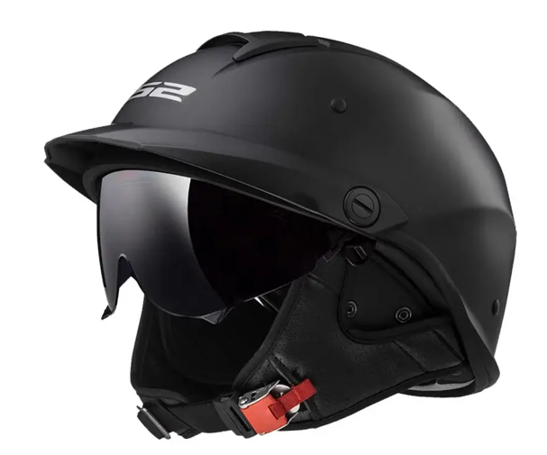
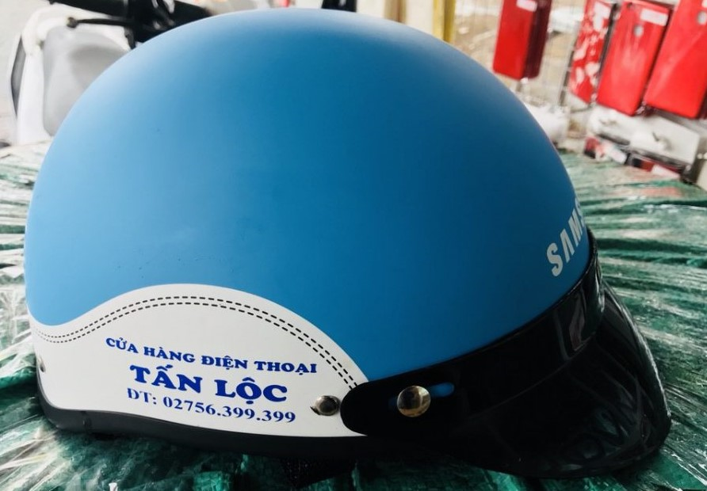
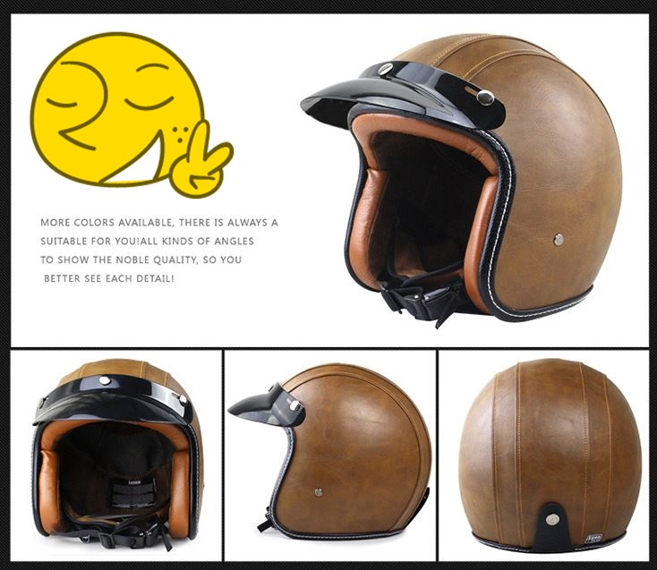
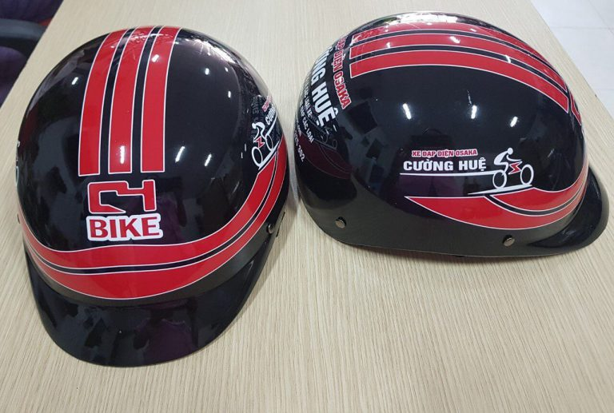
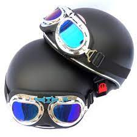
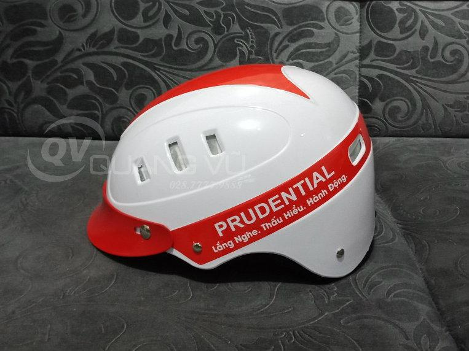

Giới thiệu
Chào mừng bạn đến với trang web bán mũ bảo hiểm trực tuyến. Chúng tôi cung cấp một loạt các mẫu mũ bảo hiểm chất lượng từ các nhà sản xuất uy tín. Chúng tôi cam kết đảm bảo sự an toàn và thoải mái cho bạn khi tham gia giao thông.
Sản phẩm
-
1. Mũ bảo hiểm 1/2 đầu kết rời
Phần nón được thiết kế bao trọn nửa phần đầu, phần kết nón có thể tháo rời linh hoạt.
Giá: 250.000 vnd
-
2. Mũ bảo hiểm nửa đầu giả da
Mũ bảo hiểm nửa đầu giả da là mẫu nón thiết kế phần thân nón có thiết kế giả da 2 bên mặt nón trái phải. Với loại nón bảo hiểm này, khách hàng có thể tận dụng phần giả da để in thông tin hoặc phối màu thương hiệu. Dưới đây là một số mẫu giả da được khách hàng duyệt và sản xuất.
Giá: 100.000-150.000 vnd
-
3. Mũ bảo hiểm bọc da
Thiết kế của mẫu nón bọc da tương tự mũ bảo hiểm giả da ở trên. Điểm khác biệt chính ở đây là phần giả da được thay thế bằng chất liệu da bao bọc bên ngoài. Mẫu này tạo sự mới lạ, sang trọng nhưng chi phí sẽ cao hơn so với mẫu nón giả da.
Giá: 100.000-200.000 vnd
-
4. Mũ nửa đầu kết liền
Phần lớn mẫu nón bảo hiểm nửa đầu hiện nay đều có kiểu kết rời. Phần kết mũ sẽ có màu đen hoặc phối màu theo khách hàng yêu thích và có thể tháo rời ra. Đối ngược với mẫu nón kết rời thì nón bảo hiểm kết liền lại tạo sự độc lạ cho món quà. Phần kết nón rời được bỏ đi, thay vào đó, khuôn nón bảo hiểm tạo ra sản phẩm có phần kết gắn liền với thân nón, đồng bộ về chất liệu, màu sắc.
Giá: 60.000-100.000 vnd
-
5. Mũ bảo hiểm có kính
Xu hướng phối kính bảo vệ phía trước cũng được nhiều khách hàng yêu thích hiện nay. Thay vì có phần kết mũ thì phần kính bảo vệ mắt được thay thế. Mẫu nón này sẽ giúp chắn mưa, che bụi khi đội nón. Lúc không cần thì có thể gạt phần kính lên phía trên.
Giá: 195.000 vnd
-
6.Nón bảo hiểm 6 lỗ
Khi nhắc đến TOP các loại mũ bảo hiểm quảng cáo được yêu thích không thể thiếu mẫu nón 6 lỗ. Kiểu nón độc đáo, thiết kế thời trang, tạo nên sản phẩm vừa chất lượng lại có tính thẩm mỹ cao.
Giá: 70.000-100.000 vnd